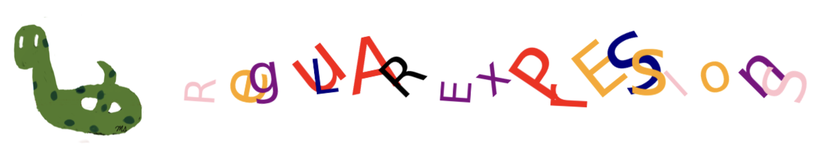

Regular Expressions#

Regular expressions, commonly known as regex, are a powerful tool for working with strings and text.
They are widely used when handling files containing long texts or strings to search for specific patterns or modify the original text.
Instead of writing lengthy programs with numerous iterations and conditional statements, regular expressions allow you to accomplish the same tasks in a concise and readable manner.
This makes them an efficient and effective way to process and manipulate text.
The module for working with regular expressions in Python is called re and should be imported using:
import re
Characters#
The following characters are commonly used to define patterns for finding matches:
Caret (
^): Matches the start of a string.‘^x’ matches ‘xy’ at the beginning.
Dollar Sign (
$): Matches the end of a string.‘x$’ matches ‘yx’ at the end.
Dot (
.): Matches any character except a newline.‘x.y’ matches ‘xay’, ‘xby’
Asterisk (
*): Matches zero or more repetitions of the preceding character.‘x*’ matches ‘’, ‘x’, ‘xx’, ‘xxx’
Plus (
+): Matches one or more repetitions of the preceding character.‘x+’ matches ‘x’, ‘xx’, ‘xxx’
Question Mark (
?): Matches zero or one occurrence of the preceding character.‘xy?’ matches ‘x’ or ‘xy’.
Pipe (
|): Acts as an OR operator.‘xyz|yzt’ matches ‘xyz’ or ‘yzt’.
Backslash (
\): Escapes special characters or introduces special sequences.\.matches a literal dot.
Parentheses (
()): Groups patterns and captures matches.‘(xyz)+’ matches one or more repetitions of ‘xyz’.
Square Brackets (
[...]): Matches any one character inside the brackets.0-9: all digitsA-Za-z: all lettersA-Z: uppercase lettersa-z: lowercase letters[^...]: except the characters in the square bracket
\d: Matches any digit (0-9).‘\d’ matches ‘1’,’2’,’3’,..,’9’
\D: Matches any non-digit.‘\D’ matches ‘x’, ‘c’, ‘!’
\s: Matches any whitespace character.‘\s’ matches spaces, tabs
\S:Matches any non-whitespace character.‘\S’ matches ‘x’, ‘1’
\w: Matches any alphanumeric character (letters, digits, or underscore).‘\w’ matches ‘x’, ‘1’, ‘_’.
\W: Matches any non-alphanumeric character.‘\W’ matches ‘%’, ‘#’
findall()#
Purpose: Extracts all occurrences of a specified pattern in a string.
Return Value: A list of non-overlapping matches for the pattern in the string.
Order of Output: Matches are returned in the order they appear in the string.
This function is useful for identifying and retrieving all instances of a pattern efficiently.
help(re.findall)
Help on function findall in module re:
findall(pattern, string, flags=0)
Return a list of all non-overlapping matches in the string.
If one or more capturing groups are present in the pattern, return
a list of groups; this will be a list of tuples if the pattern
has more than one group.
Empty matches are included in the result.
Caret#
Starts with ‘a’
re.findall('^a' , 'abcd')
['a']
re.findall('^a' , 'bcd')
[]
Starts with ‘b’
re.findall('^b' , 'abcd')
[]
Dollar sign#
Ends with ‘d’
re.findall('d$' , 'abcd')
['d']
Ends with ‘a’
re.findall('a$' , 'bcd')
[]
Ends with ‘b’
re.findall('b$' , 'abcd')
[]
Dot#
Any character (except newline) between between ‘a’ and ‘c’
re.findall('a.c' , 'afc')
['afc']
re.findall('a.c' , 'bcd')
[]
Any two characters (except newline) between between ‘a’ and ‘c’
re.findall('a..c' , 'axyc')
['axyc']
Asterisk#
Zero or more ‘a’
re.findall('a*' , 'axyc')
['a', '', '', '', '']
Zero or more ‘c’
re.findall('c*' , 'axyc')
['', '', '', 'c', '']
‘a’ followed by one or more ‘x’
re.findall('ax*' , 'axyc')
['ax']
Plus#
One or more ‘a’
re.findall('a+' , 'axyc')
['a']
One or more ‘c’
re.findall('c+' , 'axyc')
['c']
‘a’ followed by one or more ‘x’
re.findall('ax+' , 'axyc')
['ax']
Question Mark#
Zero or more ‘a’
re.findall('a?' , 'axyc')
['a', '', '', '', '']
Zero or more ‘c’
re.findall('c?' , 'axyc')
['', '', '', 'c', '']
‘a’ followed by zero or more ‘x’
re.findall('ax?' , 'axyc')
['ax']
Pipe#
‘x’ or ‘y’
re.findall('x|y' , 'axyc')
['x', 'y']
‘ax’ or ‘yd’
re.findall('ax|yd' , 'axyc')
['ax']
Backslash#
‘a.c’ matches ‘a.c’
re.findall('a\.c' , 'abcda.c')
['a.c']
‘a..c’ matches ‘a.(any character)c’
re.findall('a\..c' , 'abcda.fc')
['a.fc']
Paranthesis#
Matches one or more repetitions of ‘ab’
re.findall('(ab)+' , 'abcdab')
['ab', 'ab']
Matches one or more repetitions of ‘a(any character)b’
re.findall('(a.b)+' , 'axbcdayb')
['axb', 'ayb']
Paranthesis also used to extract only the part of the match inside the parentheses.
Starts with ‘c’ and ends with ‘d’, with the match taking the form ‘a(any character)d’.
re.findall('c(a.b)d' , 'apbxcavbd')
['avb']
Square Brackets#
All digits
re.findall('[0-9]', '1abcd')
['1']
Non-digits
re.findall('[^0-9]', '1abcd')
['a', 'b', 'c', 'd']
All letters
re.findall('[A-Za-z]', '1abcd')
['a', 'b', 'c', 'd']
All non-letters
re.findall('[^A-Za-z]', '1ab!cd')
['1', '!']
Match the characters ‘d’, ‘n’, and ‘k’
re.findall('[dnk]', '1abd!cnd')
['d', 'n', 'd']
Digits#
re.findall('\d', '1ab!cd')
['1']
Non-digits#
re.findall('\D', '1ab!cd')
['a', 'b', '!', 'c', 'd']
Whitespace#
re.findall('\s', '1a\nb!\tc d')
['\n', '\t', ' ']
Non-Whitespace#
re.findall('\S', '1a\nb!\tc d')
['1', 'a', 'b', '!', 'c', 'd']
Alphanumeric#
re.findall('\w', '1a\nb!\tc d')
['1', 'a', 'b', 'c', 'd']
Non-Alphanumeric#
re.findall('\W', '1a%&@\nb!\tc d')
['%', '&', '@', '\n', '!', '\t', ' ']
search()#
Purpose: Searches for the first occurrence of a specified pattern in a string.
Return Value: A MatchObject if the pattern is found; otherwise, it returns None.
Behavior: Stops searching as soon as the first match is found.
This function is ideal when you only need to confirm the presence of a pattern or retrieve its first occurrence.
help(re.search)
Help on function search in module re:
search(pattern, string, flags=0)
Scan through string looking for a match to the pattern, returning
a Match object, or None if no match was found.
starts with ‘a’
re.search('^a' , 'abcd')
<re.Match object; span=(0, 1), match='a'>
starts with ‘a’
re.search('^a' , 'bcd')
starts with ‘b’
re.search('^b' , 'abcd')
ends with ‘d’
re.search('d$' , 'abcd')
<re.Match object; span=(3, 4), match='d'>
ends with ‘a’
re.search('a$' , 'bcd')
first digit
re.search('[0-9]', 'a3bc2d')
<re.Match object; span=(1, 2), match='3'>
first non-digit
re.search('[^0-9]', '1abcd')
<re.Match object; span=(1, 2), match='a'>
- first letter
Cell In[47], line 1
- first letter
^
SyntaxError: invalid syntax
re.search('[A-Za-z]', '1@abcd')
<re.Match object; span=(2, 3), match='a'>
first non-letter
re.search('[^A-Za-z]', 'xys1abcd')
<re.Match object; span=(3, 4), match='1'>